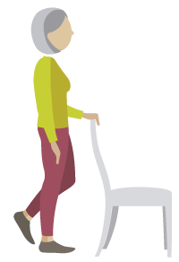

Balance
We rely on our balance to stay
upright when we over-reach for
something or trip up. But as we
age, our balance reaction times
get slower and so do reflexes.
That makes it harder to regain
balance, especially when doing
something quickly.
What can I do 
It’s surprisingly easy to
improve your balance:
see centre pages
(16-17) for some simple
regular exercises
(no Lycra required!)
Muscle strength and joints
Between the ages of 50 and 70, we lose about 30% of our muscle strength, which isn’t great news if we’re trying to regain our balance or stop a fall.
What can I do
Regular physical activity
strengthens muscles, whatever
your age. The recommended
activity level is 30 minutes,
five times a week: gardening,
vigorous housework, cycling and
daily walks all count. Experts
also advise twice-weekly muscle-strengthening exercises
for the over-65s.
Bones
Bones naturally become more brittle as we age, which makes a fracture more likely if we do fall. This is true for both men and women, but is especially true in post-menopausal women.
What can I do
Weight-bearing activities are also great for maintaining strong bones, and a healthy balanced diet will help ensure you get enough calcium to maintain bone strength.
Vitamin D, which helps the body absorb calcium, can be obtained from exposure to sunlight and from some foods.
Certain groups of the population are at risk of not getting enough vitamin D. The Government recommends people 65 years and over, those not exposed to much sun, and those with darker skin, all take a daily vitamin D supplement (10 micrograms).
Sunlight exposure without
sunscreen should be limited to
10 mins per day on the arms
and face between May and
September but NO burning!